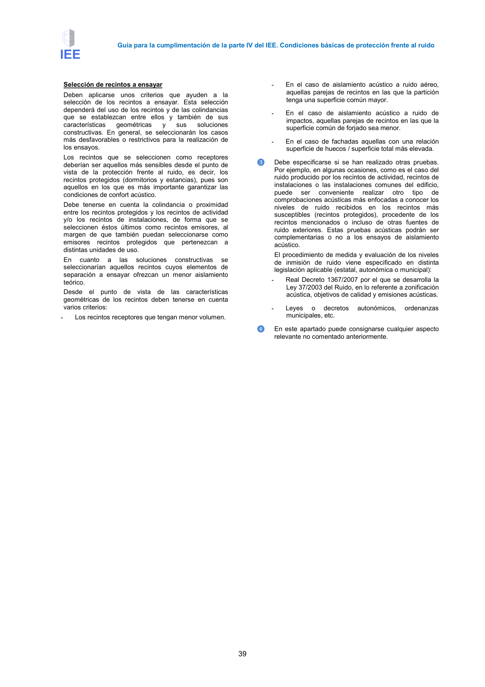

IEE 2016 · edición 2016-11-01 · capa guia
Documento GUIA-PDF-a5d4ef5252ba · SHA-256 del PDF 813669d3066c0ff79457d57b80b0512a4fbb248bc5db1f7baf473c369a064738
Página física 39 de 65.
Copia fiel del PDF fuente · Fuente oficial
Ficha de la disposición en la fuente oficial
Créditos y autoría en el PDF fuente. Reproducción con cita de fuente y autores.
Permiso literal: Se permite la reproducción del contenido total o parcial de esta Guía siempre y cuando se haga citando la fuente original.
Guía para la cumplimentación de la parte IV del IEE. Condiciones básicas de protección frente al ruido
Dirección y coordinación
Luis Vega Catalán
Mª Cristina Colomo Fernández
Eduardo González de Prado
Dirección General de Arquitectura, Vivienda y Suelo. Ministerio de Fomento
Mª Teresa Carrascal García
Instituto de Ciencias de la Construcción Eduardo Torroja. IETcc- CSIC
Autores
Mª Teresa Carrascal García
Amelia Romero Fernández
Mª Belén Casla Herguedas
Unidad de Calidad en la Construcción del Instituto de Ciencias de la Construcción Eduardo Torroja IETcc- CSIC
Se agradece la colaboración de
Belén Delgado Giménez
Fundación FIDAS
Alberto Esteban González
C.T.O. Estudios y proyectos – Gikesa
Giovanni Muzio
C.T.O. Estudios y proyectos
Francisco Labastida Azemar
Arquitecto, asesor CSCAE
Pedro F. Nogueira López
Universidad de A Coruña
Alejandro Sansegundo Sierra
Acústica SanSegundo
Esta Guía para la cumplimentación de la parte IV del IEE. Condiciones básicas de protección frente al ruido, nace en el marco del
convenio de colaboración llevado a cabo entre el Ministerio de Fomento y el Instituto de Ciencias de la Construcción Eduardo Torroja y
forma parte de la estrategia de este Ministerio de generar una serie de documentos de ayuda que faciliten la aplicación de la normativa
de la edificación y que en este caso concreto, ofrezca a los técnicos criterios para poder realizar una evaluación del estado inicial de las
edificaciones en lo referente a las condiciones acústicas de las viviendas existentes y plantear medidas que incrementen su confort
acústico.
En la redacción de este documento se ha utilizado algunos de los contenidos y de las figuras de la Guía de aplicación del DB HR
Protección frente al ruido. Dicha guía puede consultarse en:
http://www.codigotecnico.org/index.php/menu-documentos-complementarios/menu-guia-aplicacion-db-hr
Se permite la reproducción del contenido total o parcial de esta Guía siempre y cuando se haga citando la fuente original.
2Formato: Texto de la página (Markdown)
Guía para la cumplimentación de la parte IV del IEE. Condiciones básicas de protección frente al ruido 39 Selección de recintos a ensayar Deben aplicarse unos criterios que ayuden a la selección de los recintos a ensayar. Esta selección dependerá del uso de los recintos y de las colindancias que se establezcan entre ellos y también de sus características geométricas y sus soluciones constructivas. En general, se seleccionarán los casos más desfavorables o restrictivos para la realización de los ensayos. Los recintos que se seleccionen como receptores deberían ser aquellos más sensibles desde el punto de vista de la protección frente al ruido, es decir, los recintos protegidos (dormitorios y estancias), pues son aquellos en los que es más importante garantizar las condiciones de confort acústico. Debe tenerse en cuenta la colindancia o proximidad entre los recintos protegidos y los recintos de actividad y/o los recintos de instalaciones, de forma que se seleccionen éstos últimos como recintos emisores, al margen de que también puedan seleccionarse como emisores recintos protegidos que pertenezcan a distintas unidades de uso. En cuanto a las soluciones constructivas se seleccionarían aquellos recintos cuyos elementos de separación a ensayar ofrezcan un menor aislamiento teórico. Desde el punto de vista de las características geométricas de los recintos deben tenerse en cuenta varios criterios: - Los recintos receptores que tengan menor volumen. - En el caso de aislamiento acústico a ruido aéreo, aquellas parejas de recintos en las que la partición tenga una superficie común mayor. - En el caso de aislamiento acústico a ruido de impactos, aquellas parejas de recintos en las que la superficie común de forjado sea menor. - En el caso de fachadas aquellas con una relación superficie de huecos / superficie total más elevada. ❸ Debe especificarse si se han realizado otras pruebas. Por ejemplo, en algunas ocasiones, como es el caso del ruido producido por los recintos de actividad, recintos de instalaciones o las instalaciones comunes del edificio, puede ser conveniente realizar otro tipo de comprobaciones acústicas más enfocadas a conocer los niveles de ruido recibidos en los recintos más susceptibles (recintos protegidos), procedente de los recintos mencionados o incluso de otras fuentes de ruido exteriores. Estas pruebas acústicas podrán ser complementarias o no a los ensayos de aislamiento acústico. El procedimiento de medida y evaluación de los niveles de inmisión de ruido viene especificado en distinta legislación aplicable (estatal, autonómica o municipal): - Real Decreto 1367/2007 por el que se desarrolla la Ley 37/2003 del Ruido, en lo referente a zonificación acústica, objetivos de calidad y emisiones acústicas. - Leyes o decretos autonómicos, ordenanzas municipales, etc. ❹ En este apartado puede consignarse cualquier aspecto relevante no comentado anteriormente.
